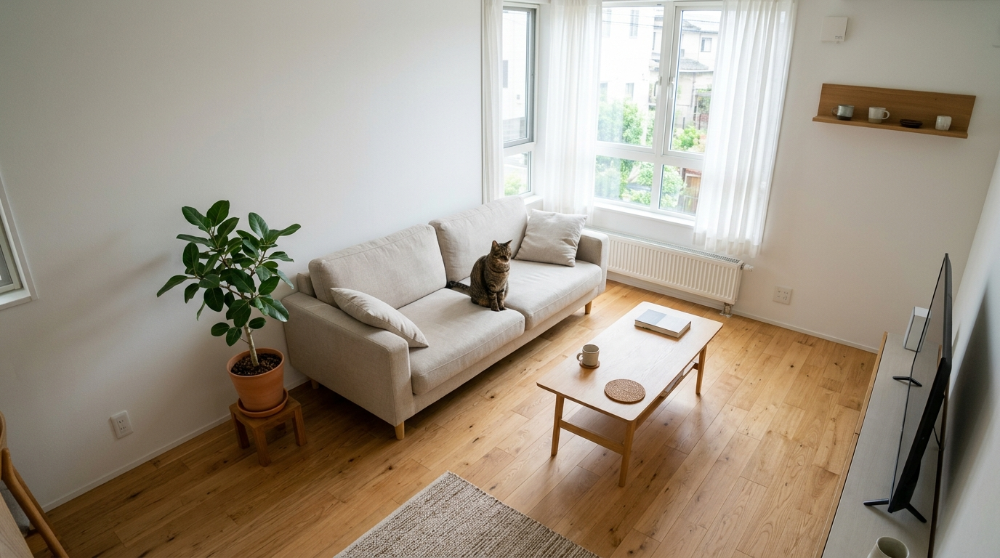

Use Case · AI Vision
Webカメラの検知を、
Webカメラの検知を、
言葉でカスタマイズ。
「動いた」ではなく「何が起きたか」を判断。通知だけでなく、スピーカーでの声かけやエアコン起動など機器操作まで双方向に連携します。
DETECT状況を理解して検知
→
JUDGE言葉の条件で判断
→
ACT通知・音声・機器操作
REC · CAM 01AI DETECT ON

CatchAITいま
猫がソファに上がりました音声で声かけ＋LINE通知
01
PET WATCH
ペットの気になる動きを、すぐ知らせる。
通知したい場面をふだんの言葉で書くだけ。動画ではなく状況の説明付きで届き、声かけ連携も可能です。
言葉の条件を切り替えてみる：
LIVING · 14:32:08PET WATCH
CatchAIT14:32
猫がソファに上がりました
設定したエリアに5秒以上滞在
3 Steps & Consultation
はじめ方は、3ステップ。
1
カメラをつなぐ
お手持ちのWebカメラやスマホ端末で始められます。
2
知りたいことを言葉で書く
通知や機器操作の条件をふだんの日本語で入力します。
3
スマホに届く・自動で動く
LINE通知、スプレッドシート記帳、音声警告を自動実行。
Live Browser PoC
人物検知 PoC を開いて試す ↗
ブラウザだけで動く人物検知デモ
サーバーへ映像を送らず、お手元のスマホ・PCのブラウザ単体でリアルタイム人物検知と統計CSV記録を行うPoCを体験できます。
[14:32:01] MediaPipe EfficientDet-Lite0 (GPU)
[14:32:08] infer: 14.2ms · person 93%
[14:32:09] ALERT #1 (連続2フレーム一致)